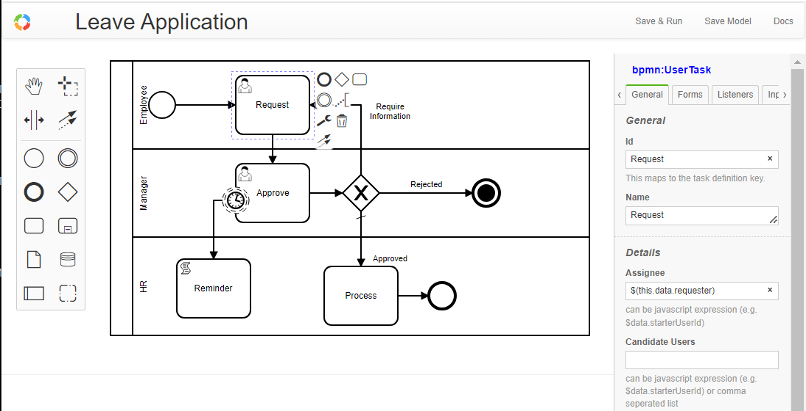

Overview#
bpmn-server provides a Workflow component based on Business Process Model and Notation that can be easily integrated into your application.
As workflow application can outlive Node.js applications, bpmn-server has out-of-the-box state presistence and variables, with concurrency across Node.js cluster and process instances
to make them ideal platform to do long running business processes, durable services or scheduled backgound tasks.
bpmnServer has multiple packages working with bpmn-server
- bpmn-web
A web application support all functions of a typical workflow application, in addition Modeling and Admin tools
- bpmn-client
A light weight library to provide remote connections to a bpmn-server through API
Modeling#
bpmn-web provides a modeling tool based on bpmn.io with customized property panel, no need to edit bpmn files

bpmn models can also be imported from other tools.
Typically your application has multiple bpmn models, a model is represented in a bpmn definition (xml).
Each Model is made of various elements, an element can be a node in the diagram (events/tasks/gateway) or a flow
Models are saved by bpmn-server and can be queried see API.model
bpmn-server support all bpmn 2.0 elements see Modeling Support
Execution#
bpmn-server is primiraly an execution engine for bpmn models.
Execution is based on the model logic that is enhanced by various extensions that allow scripting and access to your application.
During Execution, Model Listeners and Application Listeners are invoked.
Everytime a model is executed (started), an instance is created, and for each element that is executed it creates an `item'
Invoking Execution Engine#
You can communicate with the the execution engine' through an API [see API.engine](api/interfaces/IAPIEngine.md)
tostarta Workflow or tocontinue` executin of an Item, etc.
For more details about Invoking Execution Engine
Execution logic and scripting#
During Execution of the work bpmn-server can invoke custom scripts at various event or call back your business application
For more details about Execution behaviour
Datastore#
At various stages of execution, instance object with its parts is saved into a datastore (defaults to MongoDB)
Instances and Items can be queried through an API see API.data
For more details about data management
User Management and Security#
bpmn-server is relying on the front-end applicaton to authenticate users and to pass user information through the API.
-
Model designer/developr can define assignee, candidateUsers, candidateUserGroups as static string or JavaScript expressions
-
Application fron-end need to pass the implementation of `userService'
-
bpmnServerwill enforce security rules based on the current user passed by the application
bpmn-web Demo Application , provides a complete implementation of users management using Passport and MongoDB.
For more details about security
Demo Web Application#
A Demo Web application bpmn-web provides full front-end along with security features to demonstrate and test the capabilities of bpmn-server.
The web app provides:
- Presistent Modeling tool, using bpmn.io
- Model property panel supporting all features of bpmn-server , no need to edit bpmn file
- Execution with input form for defined fields

- List of outstanding/recent tasks and workflow
- Viewing of
instancedetails

- View of Model specification

Full Demo Web Application#
We Provide a full demo @ https://bpmn.omniworkflow.com
Installation#
This package requires Node.js and an access to MongoDB () if you don't have MongoDB already installed you can create a free cloud account here or can be installed locally
- git clone
> git clone https://github.com/bpmnServer/bpmn-web.git
- install packages
> npm install
- setup the app
> npm run setup
- Edit .env file to have MongoDB point to your server or free cloud account
# MongoDB Settings
MONGO_DB_URL=mongodb://0.0.0.0:27017/bpmn
#
- Run Setup again to create db objects
> npm run setup
Your installation is now complete.
- Start server
> npm run start
Console will display:
bpmn-server WebApp.ts version 1.4.0
MongoDB URL mongodb://0.0.0.0:27017/bpmn
db connection open
App is running at http://localhost:3000 in development mode
Press CTRL-C to stop
Use your browser to view the bpmn-server running
Docker installation#
To install MongoDB, bpmn-server and bpmn-web in on a docker container
### 1. Create a folder , cd to folder ### 2. Create a `docker-compose.yml` as follows:version: "3.7"
name: bpmn-server
services:
bpmn-web:
image: ralphhanna/bpmn-web
command: sh -c "
npm run setup &&
npm run start"
ports:
- 3000:3000
volumes:
- 'app:/app'
depends_on:
- mongo
mongo:
image: mongo
ports:
- 27017:27017
volumes:
- mongodb:/data/db
volumes:
mongodb:
driver: local
driver_opts:
type: 'none'
o: 'bind'
device: './mongodb_volume'
app:
driver: local
driver_opts:
type: 'none'
o: 'bind'
device: './bpmn_server_volume'
Command Line Interface#
bpmnServer provide some basic functionalities using CLI
>npm run cli
server started..
Commands:
q to quit
s start process
lo list outstanding items
li list items
l list instances for a process
di display Instance information
i Invoke Task
sgl Signal Task
msg Message Task
d delete instnaces
lm List of Models
lme List of Models
ck Check locked instnaces
re Recover hung processes
lu List Users
spw Set User Password
? repeat this list
Enter Command, q to quit, or ? to list commands
>
Postman#
Postman Collection to invoke bpmn-server API is available here
to update to latest release#
> npm update bpmn-server
Application Integration#
bpmn-server is intended to be integrated into your application see
Documentation#
- Invoking Workflows
- Execution
- Scripting
- Security
- Data
- Input/Output
- Data Query
- Examples
- API Summary
- API
- Setup
- Application Integration
License#
This project is licensed under the terms of the MIT license.
Acknowledgments#
The bpmn-server resides upon the excellent library bpmn-io/bpmn-moddle developed by bpmn.io
The bpmn-server is inspired by the library bpmn-engine